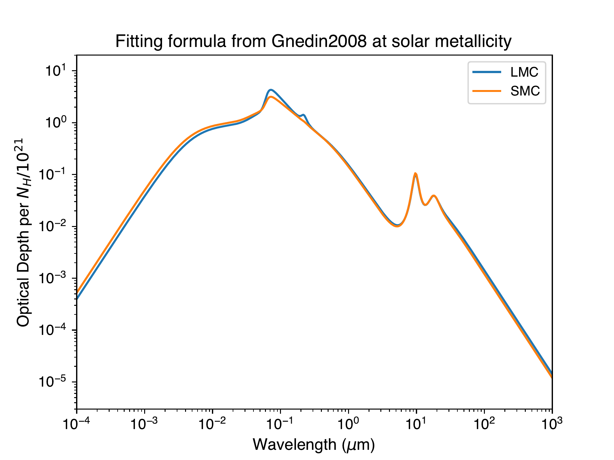

ISM
Table of Contents
\( \newcommand{\dif}{\,\mathrm{d}} \newcommand{\sci}[2]{#1 \times 10^{#2}} \def\num#1{\numx#1}\def\numx#1e#2{{#1}\mathrm{e}{#2}} \newcommand{\msun}{{\rm M}_\odot} \newcommand{\si}[1]{{\rm #1}} \)
1 H II Region
1.1 Radiative Recombination of Hydrogen
Case B recombination: optically thick to radiation just above \(I_{\rm H}=13.60\) eV, so that ionizing photons emitted during recombination are immediately reabsorbed, creating another ion and free electron by photoionization.
Following Draine Ch 15.1.1, let \(Q_{0}\) be the rate of emission of hydrogen-ionizing photons, i.e., \(h\nu>I_{{\rm H}}=13.6\) eV. Equating the rates of photoionization and radiative recombination gives the ionization balance equation:
\[Q_{0}=\frac{4\pi}{3}R_{{\rm S}}^{\;3}\,\alpha\,n(H^{+})\,n_{e}.\]
Since \(n(H^{+})=n_{e}=n_{H}\equiv n_{0}\), we can solve for the Stromgren radius \citep[][Eq. 15.1 (pg 163)]{Draine:2011} \[ \label{eq:rs} R_{S}\equiv\left(\frac{3Q_{0}}{4\pi\,n_{0}^{\;2}\,\alpha_{B}}\right)^{1/3} = 3.17 \, Q_{49}^{1/3} \, n_2^{-2/3} \, T_4^{0.28}~{\rm pc}, \] where \[ \alpha_B(T_e) \approx 2 \times 10^{-13} \left( \frac{T_e}{10^4 {\rm K}} \right)^{-3/4} \, {\rm cm}^3 \, {\rm s}^{-1}. \]
Draine also talked about other aspects of region, including the mean emission measure, mean free path of an 18 eV photon at \(T<50,000\) K, and helium ionization.
1.2 Ionization Time Scales
How long will it take to ionize an region?
\[\tau_{{\rm ioni.}}=\frac{4/3\,\pi R_{{\rm S}}^{\;3}\,n_{0}}{Q_{0}}=\frac{1}{\alpha_{B}\,n_{0}}=\frac{1.22\times10^{3}\,{\rm yr}}{n_{2}}.\] for \(T \sim 10^4\) K. The recombination timescale (after the ionizing source turns off) is identical to the ionization timescale. For \(n_{0}>0.03\,{\rm cm}^{-3}\), this timescale is shorter than the main-sequence lifetime \(\gtrsim\) 5 Myr for a massive star.
1.3 Ionization Fraction
TODO
1.4 I-front Dynamics
1.4.1 Propagation of ionization fronts
1.4.2 Expansion of H II Regions
Expansion of HII regions due to pressure force.
1.5 Emission and Absorption by the ISM
1.5.1 Emission from HII Regions
The UV radiation from OB stars in HII regions cause the photoionization of the surrounding ISM. At \(T \sim 10^4~{\rm K}\) and \(N_e<10^6 {\rm cm^{-3}}\), the luminosity in the H\(\alpha\) line is \[L_{{\rm H}\alpha} = 0.450 (h \nu_{{\rm H}\alpha}) \dot{N}_{\rm ion},\] where \(\dot{N}_{\rm ion}\) is the number of ionizing photons emitted per unit time, and since it has to be balanced by recombination rate, \[\dot{N}_{\rm ion} = \alpha_{\rm B} n_pn_eV.\] The Ly\(\alpha\) emission is determined by substracting the Case B recombination coefficient \(\alpha_{\rm B}\) by the effective recombination coefficient to 2S. At the same environment as above, \[L_{{\rm Ly}\alpha} = 0.676 h \nu_{{\rm Ly}\alpha} \dot{N}_{\rm ion}.\] Thus, we can infer the number of OB stars in a HII region by measuring the luminosity in a recombination line, and since OB stars are short lived, their number is directly related to their birth rate. This provides the principle for deriving the star-formation rate in a star-forming region from its recombination line strengths.
2 Spectra lines
2.0.1 Lyman-\(\alpha\)
(\citealt{Draine2011} Sec 15.7)
The Lyman-alpha line is the spectral line of hydrogen from \(n=2\) to \(n=1\). 1215.67 angstroms, or 10.2 eV.
The recombining hydrogen in HII region generates Lyman-alpha radiation in a rate of about \(\frac{2}{3} f_{\rm ion} Q_0\). The Lyman-alpha photons can be resonantly scattered by the small amount of neutral hydrogen.
Escape of Lyman-alpha photons from galaxies therefore requires either very low dust abundances or "breakout" of the ionization front so that, in at least some directions, the H II is not bounded by dusty H I gas.
2.0.2 Lyman continuum
2.0.3 21-cm
3 Dust
3.1 Metallicity
Solar metallicity is \(Z = 0.0134\) \cite{Asplund2009}, where \(Z\) is the heavy element mass fraction. The metallicity relative to solar is \[[{\rm Fe}/{\rm H}] \equiv \log_{10} \left[ \frac{(N_{\rm Fe}/N_{\rm H})_{\rm star}}{(N_{\rm Fe}/N_H)_{\odot}} \right],\] Stars with [Fe/H] < 0 are metal-poor relative to the Sun. Metal poor makes stars bluer and metal rich makes stars redder due to line blanketing (metals absorb preferentially blue light) and opacity effect (metals absorb energy from the interior of the star, making red giants "swell up" even more, and give them cooler temperatures.)
3.2 Dust Extinction
Figure 1: dust extinction curve from \cite{Gnedin2008}
cite:Ma2021

Figure 1: Dust extinction in LMC/SMC
3.3 Sputtering
3.3.1 Sputtering in Hot Gas
[Draine Sec. 25.7] Grain lifetime of a stationary grain is given by \[\tau = 10^5 (1 + T_6^{-3}) \frac{a/0.1 \mu{\rm m}}{n_{\rm H}/{\rm cm}^{-3}} \; {\rm yr}.\] In HII region with \(T = 10^4~{\rm K}\) and \(n_{\rm H} = 10^4~\si{cm^{-3}}\), \(\tau = 10\) Myr for grains with size 0.1 micron. With \(n_{\rm H} = 10^2~\si{cm^{-3}}\), \(\tau = 1000\) Myr, and if the temperature increases to \(10^5\) K, \(\tau = 1\) Myr.
3.4 RAMSES+RT
Possible issues:
- I see a mu=1.4 with comments: hard set mu=1.4 to make temperature agree with Audic & Hennebelle.
Mean particle mass, \(\mu\), is correctly calculated by the function
getMu in main/rt_cooling_module.f90:
\[\mu = [X(1+x_{\rm HII}) + \frac{Y}{4}(1 + x_{\rm HeII} + 2x_{\rm HeIII})]^{-1}\]
- For hydrogen and helium
- In each cell, photoheating and radiative cooling of hydrogen and
helium is performed by the radiative transfer module of RAMSES-RT as
in Rosdahl et al. (2013).
- Photoheating rate \(\mathcal{H}\) is a sum of the heating contributiosn from all photoionziation events (HI, HeI, and HeII).
- The primordial cooling rate \(\mathcal{L}\) include various cooling processes: collisional ionizations, collisional excitations, recombinations, dielectronic recombinations, bremsstrahlung and Compton cooling.
- In each cell, photoheating and radiative cooling of hydrogen and
helium is performed by the radiative transfer module of RAMSES-RT as
in Rosdahl et al. (2013).
- For metals
- 'Neutral' function N(T)
- Below 10^4 K: the prescription of Audit & Hennebelle (2005), which
includes carbon, oxygen and dust grains as well as the ambient
UV background in the ISM. This is based on the work of Wolfire et
al. (1995, 2003).
- Including cooling by
- fine-structure lines of CII (92 K)
- fine-structure lines of OI (228 and 326 K)
- cooling by H (Lyα line)
- cooling by electron recombination onto positively charged grains
- and heating by
- photo-electric effect on small grains and PAHs due to the FUV galactic radiation.
- (This might be probmatic due to the hard mu = 1.4. In Audit2005, they have no radiative transfer, so the mean particle weight is constant at mu = 1.4, while in RAMSES+RT, mu is dramatically higher due to ionized electrons.)
- Including cooling by
- Above 10^4 K: Sutherland & Dopita (1993)
- Below 10^4 K: the prescription of Audit & Hennebelle (2005), which
includes carbon, oxygen and dust grains as well as the ambient
UV background in the ISM. This is based on the work of Wolfire et
al. (1995, 2003).
- 'Photoionized' cooling function
- a piecewise fit to Ferland (2003): \(\Lambda = 3\times10^{-24}~{\rm erg~cm^3~s^{-1}}\) below 9000 K and \(2.2\times10^{-22}~{\rm erg~cm^3~s^{-1}}\) above 10^5 K.
- 'Neutral' function N(T)
TODO: make a curve of the cooling funciton
Radiative cooling and heating of hydrogen and helium is performed by the RT module of RAMSES-RT as in Rosdahl et al. (2013), consisting of two functions:
- 'Neutral' function \(N(T)\): Audit & Hennebelle (2005), which includes cooling from carbon , oxygen, and dust grains as well as the effect of the ambient UV background in the ISM.
- 'photoionized' cooling function \(P(T)\): Ferland (2003)
TODO: plot cooling function in RAMSES, find
bibliographystyle:plain bibliography:~/folders/BIB_HE.bib